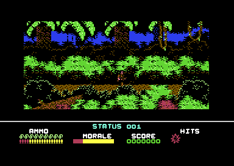
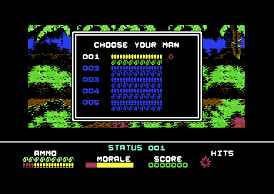
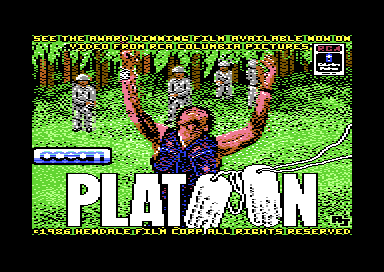

<meta charset="utf-8">
<meta name="viewport" content="width=device-width, initial-scale=1">
<title>{{title}}</title>
<link rel="preconnect" href="https://fonts.googleapis.com">
<link rel="stylesheet" href="https://fonts.googleapis.com/css2?family=Lato:wght@400;700;900&family=IBM+Plex+Mono:wght@400;500&display=swap">
<style>
:root{
  --bg:#23262d; --paper:#e9e7e1; --surface:#ffffff; --surface-2:#f1efea; --line:#d5d3cc; --line-soft:#e0ded8;
  --ink:#2f3136; --ink-soft:#55585f; --ink-mute:#80838a;
  --link:#1f5fa8; --link-hover:#154480; --accent:#1f5fa8;
  --amber:#c25a00; --cyan:#1f5fa8; --coral:#d04a3a; --green:#2a8a4a; --violet:#4a5bd6; --hl:#fff0c2;
  --chip:#2f3136; --chip-ink:#ffffff;
  --c64blue:#40318d; --c64grey:#686868;
  --fd:'Lato',system-ui,sans-serif; --fb:'Lato',system-ui,sans-serif; --fm:'IBM Plex Mono',ui-monospace,Menlo,monospace;
  --col:1080px; --gx:68px; --fs:17px; --lh:1.6; --hw:900; --h1:46px; --h2:26px; --sy:48px; --pp:26px; --r:10px;
  --plate-shadow:0 1px 2px rgba(0,0,0,.05),0 4px 14px rgba(0,0,0,.05);
}
*{box-sizing:border-box}
html{background:var(--bg);min-height:100%}
body{background:var(--paper);color:var(--ink);font-family:var(--fb);font-size:var(--fs);line-height:var(--lh);max-width:var(--col);margin:0 auto;min-height:100vh;padding:0 0 4rem}
h1,h2,h3{font-weight:var(--hw);letter-spacing:-.01em;text-wrap:balance;color:var(--ink);margin:0}
.wrap{padding:0 var(--gx)}
.hero{padding:48px var(--gx) 8px;text-align:left}
.eyebrow{font-family:var(--fm);font-size:12px;letter-spacing:.08em;text-transform:uppercase;color:var(--ink-mute);margin:0 0 10px}
.hero h1{font-size:var(--h1);line-height:1.15;letter-spacing:-.02em;margin:0 0 14px}
.hero .sub{margin:0 0 .6em;color:var(--ink-soft)}
section{padding:var(--sy) 0 24px}
section:last-of-type{border-bottom:none}
.fig{font-family:var(--fm);font-size:12px;letter-spacing:.08em;text-transform:uppercase;color:var(--ink-mute);margin:0 0 10px}
h2.t{font-size:var(--h2);margin-bottom:12px}
.lede{color:var(--ink-soft);margin:0 0 30px}
.plate{background:var(--surface);border:1px solid var(--line);border-radius:var(--r);padding:var(--pp);box-shadow:var(--plate-shadow)}
.cap{font-size:14px;color:var(--ink-mute);margin-top:14px;line-height:1.55}
.cap b{color:var(--ink);font-weight:700}
code{font-family:var(--fm);font-size:.82em;background:var(--chip);color:var(--chip-ink);border-radius:4px;padding:2px 6px;white-space:nowrap}

</style>
<!-- tabs -->
<header class="hero"><p class="eyebrow">Commodore 64 · 1987 · Ocean</p><h1>Platoon</h1><p class="sub">Ocean's game of the Oliver Stone film. Holding Z, A, C, H, and 1 together in the jungle rewrites one byte of the program and switches off a collision test between the soldier and the other figures.</p></header>
<main class="wrap" data-part="load1">
<section><p class="fig">01 · In play</p><h2 class="t">Five men in the jungle</h2><p>The player leads a platoon of five through the jungle, one man at a time. The first task is to find explosives and blow up a bridge, so that a patrol cannot follow. A village comes next, where the huts hide a torch, a map, and a trapdoor to the tunnels below. The panel under the jungle shows ammunition, morale, score, and hits.</p><div class="plate"><p class="cap">The first screen of the jungle.</p></div><p>A panel headed CHOOSE YOUR MAN lists the five men, each with his own row of ammunition. The panel can open during play, and fire closes it again.</p><div class="plate"><p class="cap">Men 001 to 005, the first highlighted.</p></div></section>
<section><p class="fig">02 · The cheat</p><h2 class="t">Z, A, C, H, and 1</h2><p>Every frame of play, the main loop at <code>$07B5</code> asks the keyboard whether five keys are down together: Z, A, C, H, and 1. When all five are held, the loop writes the instruction <code>rts</code> over the first byte of the routine at <code>$2BC8</code>. That routine tests the soldier's position against a list of other positions, most likely the enemies', and with an <code>rts</code> in front of it the test never runs. Pressing N writes the original <code>nop</code> back.</p><p>The five letters spell ZACH, the first name of the programmer, Zach Townsend, followed by 1. What a match in the test would have done is still to be read, so whether the cheat makes the soldier safe from the enemy is open.</p><p>Most of the game's keys, the five of the cheat among them, are tested by one routine at <code>$BA6A</code>. A key's number, eight times its keyboard row plus its column, picks a row-select byte and a column mask from two eight-byte tables, and the answer comes back in the carry flag.</p></section>
<section><p class="fig">03 · The play screen</p><h2 class="t">Ten interrupts a frame</h2><p>The jungle screen is drawn with ten raster interrupts, each of which writes the address of the next into the processor's interrupt vector. The first, at <code>$17FE</code>, sets the scroll and places the sprites at the top of the screen. Lower down, others move a sprite, hide the sprites behind the scenery, and turn them off at the foot of the play area. Four more switch the character set and the colours for the status panel.</p></section>
<section><p class="fig">04 · Loading</p><h2 class="t">A picture, then all of memory</h2><p>The disk boots a 233-byte program that loads the fast loader. The fast loader first asks the disk drive to read one block and checks the drive's reply, then shows the loading picture and waits for SPACE. After SPACE, the screen goes dark while the whole first part of the game, 64,506 bytes from <code>$0400</code> to <code>$FFF9</code>, comes in over everything the loader had in memory.</p><div class="plate"><p class="cap">The loading picture waits for SPACE.</p></div><p>The jungle and the village are that first load. The rest of the game lies on the disk's second side in three more loads, each with a small loader of its own and a program whose first line reads SYS 2088 BY THE DYNAMIC-DUO IN 1986.</p></section>
<section><p class="fig">05 · Scope</p><h2 class="t">One load of four</h2><p>The Source tab shows the first load at the moment the loader hands over to it. The three loads on side 2 are named in the page's parts and have not been read yet.</p></section>
</main>
<footer style="margin:16px 0 0;padding:22px var(--gx) 0;border-top:1px solid #e0ded8;font-family:'IBM Plex Mono',ui-monospace,Menlo,monospace;font-size:12px;color:#80838a"><a href="https://github.com/gamesexplained/gamesexplained" style="color:#1f5fa8;text-decoration:none">GitHub</a> · <a href="https://discord.gg/3V9GWyRDWV" style="color:#1f5fa8;text-decoration:none">Discord</a><br>© Games Explained contributors. Write-ups, facts and symbol maps are available under <a href="https://creativecommons.org/licenses/by-sa/4.0/" style="color:#1f5fa8;text-decoration:none">CC BY-SA 4.0</a>; code under <a href="https://opensource.org/licenses/MIT" style="color:#1f5fa8;text-decoration:none">MIT</a></footer>
